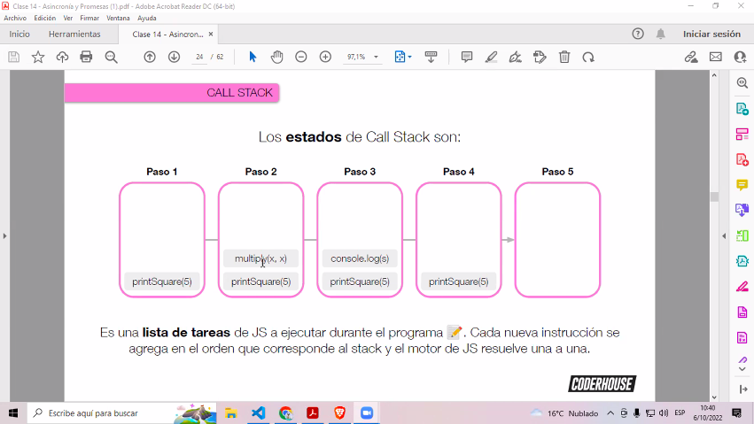

En el modelo sincrónico,se ejecutan las tareas en el orden en que están puestas en el código, mientras que en el modelo asincrónico, se pueden trabajar tareas al mismo tiempo
setTimeOutNos permite hacer tareas con un delay de tiempo específico. Es posible utilizarlo incluso en un array.
setTimeout(()=>{
document.body.style.backgroundColor = "bisque";
}, 3000)
setIntervalEsta función tiene la misma sintáxis que setTimeOut, pero la unidad de tiempo es un intervalo para la repetición de la función asociada, es decir me permite ejecutar tareas de forma reiterada, cada una cantidad determinada de tiempo.
setInterval(()=>{
console.log("Tic");
}, 1000)
Se utiliza el clearInterval() que permite definir cuándo se detendrá el intervalo.
Aquí se explican 2 conceptos para entender cómo funciona Javascript por dentro
Es una lista donde se apilan las fistintas tareas a ejecutar por nuestro programa. Javascript es un lenguaje single threaded, o de un único hilo, lo que significa que tiene un único stacj o pila de ejecución, de ají que la ejecución es implícitamente asincrónica.
Imagina una pila de platos esperando a ser lavados, cuál sacas primero? A pesar de que el que está más abajo es el primero, no será el primero en ser ejecutado. Esto se llama LIFO, Last in, first out Es un bucle de eventos que se encarga de revisar la cola de tareas para ordenarlas y ejecutarlas. Es un ente invisiblem es para entender cómo funciona realmente JS.